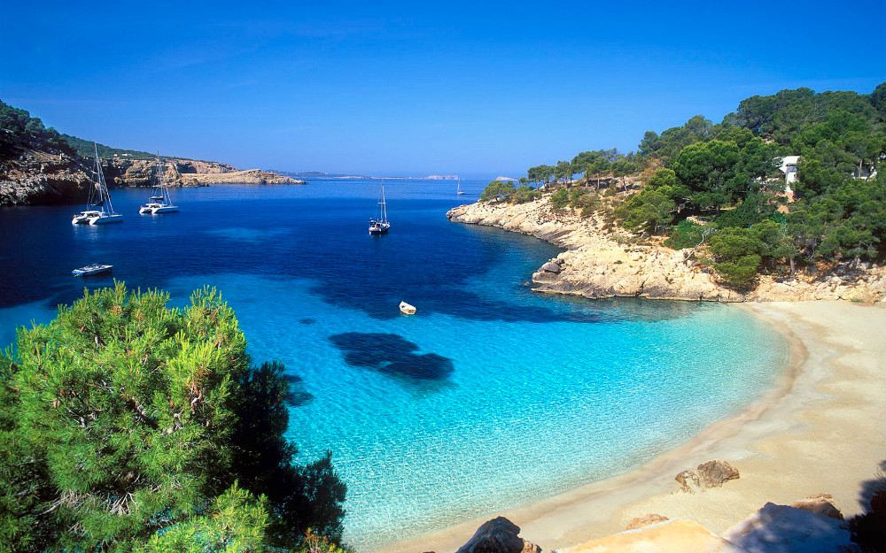

The Cote D’Azur is famous for its beautiful scenery, wonderful towns and fantastic beaches. We can assure you it will not disappoint.
For those looking for something to do outside of the main events, or if you are having an extended stay, we would recommend the following:
The Beach – Whether you're into long stretches of golden sand or small secluded coves you will find it within 10 mins drive of Ste Maxime (even nudist beaches are only 30 mins away).
For the former we recommend either the Ste Maxime beach or the Nartelle Beach (which is where our wedding venue is located). For something more secluded, we recommend driving east along the cost towards Frejus and once you pass through Les Issambres there are any number of little beaches, so take your pick!
Ste Maxime – Sainte Maxime is a quaint little town with some cute back street boutiques and a whole range of cafes and restaurants. We particularly like a restaurant called La Reserve in the centre of Ste Maxime (www.lareservestemaxime.com), the service can be a little grumpy but the food is great and it feels very traditional for such a touristy town. There are plenty of other things to also do in Ste Maxime: hire a boat from the harbour, catch the ferry over to St Tropez or if you're feeling lucky why not try the Casino!
Nartelle Restaurants – Outside Ste Maxime and on the same stretch of beach we are getting married at (Nartelle), is a whole host of fabulous restaurants. In particular we love La Voile, Olly’s mum and dad are great friends with the owner and it is a fantastic place to eat. The website is pretty basic but we highly recommend it (http://plagelavoile.com/gallery/photos-sainte-maxime/)
St Tropez (15km from Ste Maxime) – Such a beautiful town, and well worth a visit if you’ve never been before. We like nothing better than strolling through the old cobbled streets and wondering down to the port to have a coffee and check out which super yacht we want. On Tuesday and Saturday mornings is St Tropez market which is fabulous. We would recommend getting the ferry across from Ste Maxime, but if you do want to drive try and get there before 8:30 or the traffic is horrendous.
Pamplonne – Pamplonne is a stretch of beaches just outside St Tropez. We wouldn’t tend to use Pamplonne just for the beach, however if you are staying for the week Pamplonne is home to both Club 55 and Nikki Beach. Club 55 is more of a beach restaurant and is great for some celebrity spotting, you can also hire a sun lounger for the day and spend the morning/afternoon on the beach. Nikki beach is a party place: a hang out for the young, rich and beautiful of St Tropez looking to start the day in a civilised manner but end it dancing on tables and spraying 500 Euro champagne everywhere.
Port Grimaud (8.5km from Ste Maxime) – A mini Venice on sea! Port Grimaud is a charming village built on a series of waterways that all lead out to the sea. You can take a boat tour around the village or simply park the car and go for a stroll.
Water Park – For those thrill seeking kids amongst you, or those with kids, there is a water park in Ste Maxime (www.aqualand.fr)
Golf – The area plays host to several great golf courses. Rather than list them here, email Olly direct and he can give you more details (omyerson@hotmail.co.uk)
Surrounding areas – For those who want to venture a little further, there is the village of Mougins back towards Nice (a beautiful medieval village on a hill), Monte Carlo (approximately 2 hours drive) or you can even head over the Italian border.
Emergency – We would recommend looking at this website for advice on medical care and in case of emergency when you are there, www.seesttropez.com/emergency. The nearest hospital to Ste Maxime is at Gasin, near St Tropez, and there is also a hospital at Frejus.
For further information on the local area please see www.sainte-maxime.com